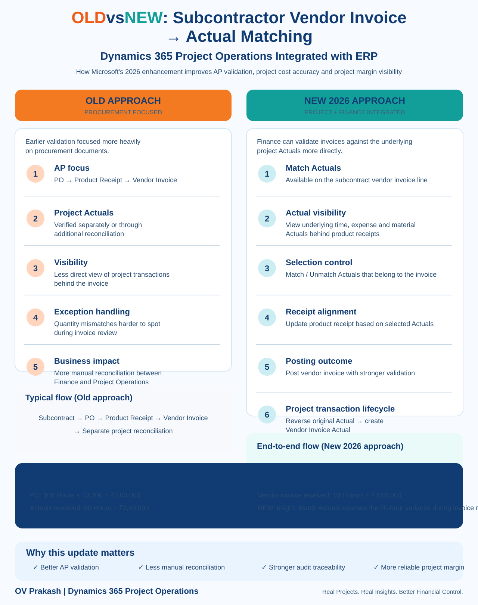

Microsoft's 2026 enhancement for subcontractor vendor invoice matching to Actuals in Dynamics 365 Project Operations Integrated with ERP is easy to misunderstand.
The important point is not that vendor invoices could never be matched to project cost Actuals before. Project Operations already supported vendor-invoice verification against subcontract cost Actuals. The 2026 improvement brings stronger visibility and matching capability directly into the Finance vendor-invoice workflow, so procurement, project operations and accounts payable work through a more connected process.
OLD vs NEW at a glance
| Earlier approach | New 2026 approach |
|---|---|
| AP mainly worked through PO → Product Receipt → Vendor Invoice. | Match Actuals is available on subcontract vendor-invoice lines in Finance. |
| Project Actual verification often required separate Project Operations review or additional reconciliation. | Finance users can see underlying time, expense and material Actuals linked to the relevant receipts. |
| Less direct project-transaction visibility during AP invoice review. | Invoice review can compare vendor billing with the project consumption behind the receipt. |
| More manual cross-system reconciliation. | Users can Match / Unmatch Actuals against the invoice line. |
| Quantity differences could be harder to identify in the AP process. | Actual quantity, receipt quantity and invoice quantity can be reviewed together. |
| Project cost reconciliation continued after invoice processing. | Posting can lead to reversal of the original subcontract Actual and creation of the Vendor Invoice Actual. |
1. Earlier process: procurement documents led the conversation
In a traditional AP-oriented review, the core documents are:
That is still important. However, for subcontracted project work it doesn't answer one crucial question:
Project Operations has long supported vendor-invoice verification with approved subcontract Actuals, but the 2026 enhancement improves how directly Finance users can access that context while processing the vendor invoice.
2. New process: Actuals become visible during invoice review
With the new capability enabled, the Match actuals action appears on subcontract vendor-invoice lines in Dynamics 365 Finance.
Microsoft documents that users can review Actuals generated from:
- Timesheet entries
- Expenses
- Material usage
These Actuals are linked to the product receipts associated with the vendor invoice.
3. A practical example
Project Actuals recorded: 80 Hours = ₹2,40,000
Vendor invoice received: 100 Hours = ₹3,00,000
The PO technically allows 100 hours, but the project has only recorded 80 hours of subcontractor consumption.
Under the new Finance-side experience, Match Actuals makes the 20-hour difference much easier to identify during invoice review.
4. Why the difference matters
A PO match alone tells you whether the vendor invoice sits inside the procurement commitment. It does not necessarily prove that the project consumed the invoiced quantity.
The stronger validation question is:
That is particularly important for professional services, subcontracted resources, expenses and project materials.
5. Match and Unmatch give AP more control
The new experience allows users to work with the relevant Actuals during vendor-invoice processing. If a transaction does not belong to the invoice being processed, it can be unmatched. Relevant Actuals can be included as part of the invoice-validation process.
This becomes especially useful when vendors bill in stages.
Vendor Invoice 1: 50 Hours
Vendor Invoice 2: 30 Hours
6. Product Receipt alignment becomes part of the same workflow
Microsoft also documents an Update product receipt step. This helps align the receipt with the selected Actuals used for invoice matching.
That creates a stronger three-way validation model for project-based subcontracting.
7. What happens after posting?
The downstream Project Operations transaction lifecycle remains critical. For full subcontracting scenarios, Microsoft documents that once vendor-invoice verification is completed, previously recorded project costs can be reversed and new cost Actuals based on the vendor-invoice lines are recorded on the project.
This avoids treating the operational subcontract Actual and the final vendor-invoice cost as two unrelated permanent costs.
8. Why this improves project-margin confidence
Project margin depends on the completeness and accuracy of project costs. A subcontractor invoice can affect that margin through quantity, unit price, timing, matching, reversal and integration.
The new capability helps reduce situations where the procurement transaction says one thing while project consumption says another.
9. What implementation teams should test
Do not test only the happy path where Actuals and invoice quantities are identical.
- Actual = 80 hours, Invoice = 80 hours
- Actual = 80 hours, Invoice = 100 hours
- Actual = 100 hours, Invoice = 80 hours
- Multiple Actuals across time, expense and material
- Partial invoice matching
- Match and Unmatch behaviour
- Product Receipt update
- Vendor Invoice posting
- Original Actual reversal
- Vendor Invoice Actual creation
- Final project cost and margin
10. Technical prerequisites
Microsoft currently documents Dynamics 365 Finance version 10.0.48 or later for the Match Actuals experience in Project Operations Integrated with ERP. The feature must also be activated using Enable subcontractor vendor invoice matching to actuals for Project Operations integrated with ERP.
The key takeaway
Don't describe this release as “Project Operations can finally match vendor invoices with Actuals.” That would be inaccurate because Project Operations already supported vendor-invoice verification with subcontract cost Actuals.
The more precise explanation is: